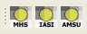
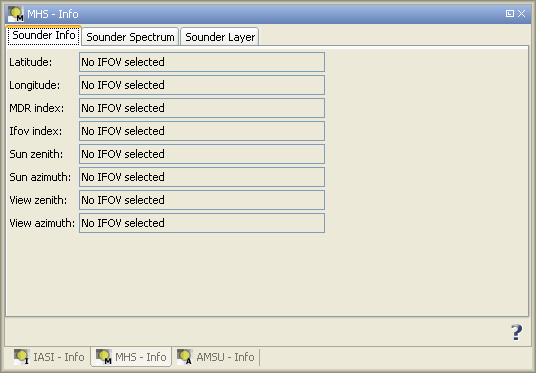
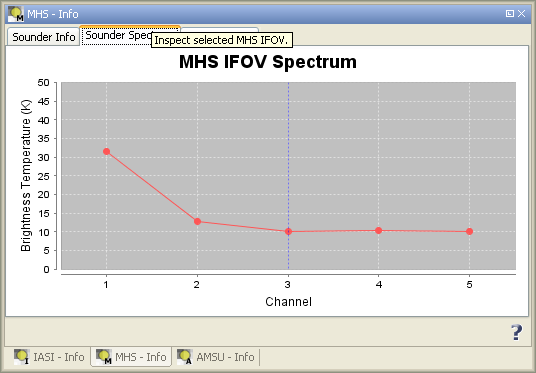
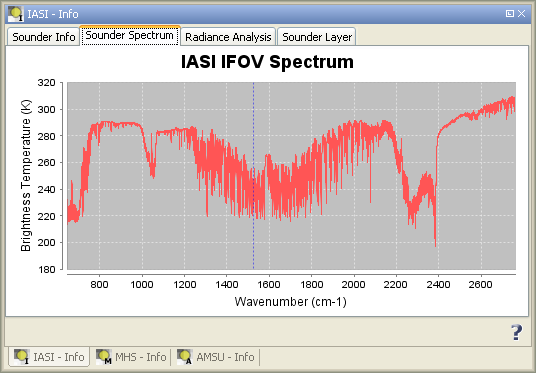
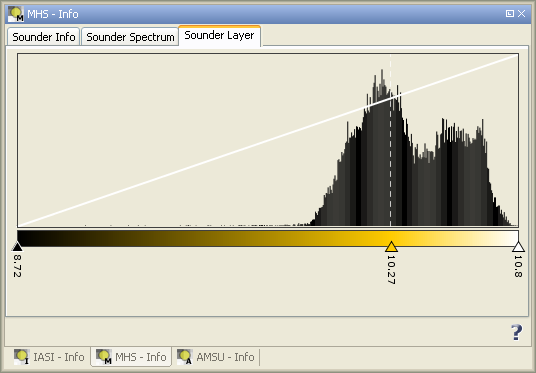

| METOP Sounder Tools | |
The METOP Sounder Tools have been brought into life in order to support users of data of the IASI, AMSU and MHS sensors on-board the EUMETSAT Metop satellites.
The software provides the following facilities for BEAM 4.5:
The METOP Sounder Tools have been developed by Brockmann Consult under EUMETSAT contract initiated and coordinated by Peter Schlüssel (EUMETSAT).
The footprint overlays will be automatically added to the layer manager, when an imageview for an AVHRR product is opened. For this the directory in which the AVHRR product is located is searched for IASI, AMSU-A and MHS products that follow the default naming convention. When no matching product is found the user will be asked to select a product manually.
The overlay overlay displays the shape of the sounder filled with a color corresponding to the measured brightness temperature. The layer manager can be used to enable or disable individual layers or to change the transparency.

The info views for the footprint overlay can opened using the corresponding button in the Metop toolbar. For each type of sounder instrument there is a specific info view which shows detailed information about the selected IFOV.
To select an IFOV, the corresponding layer has to be selected in the layer manager first. Then the selection tool (the arrow) can be used to select an individual IFOV.
The Sounder Info tab will show general information like the geolocation and the geometry. The Sounder Spectrum tab shows the spectrum of the brightness temperature. The Sounder Layer tab allows to change the color distribution by moving the arrows below the histogram or changing the color of an arrow by clicking on it. The IASI info view has an additional tab that shows information about the radiance analysis, that is included in the IASI L1C product.

An IASI footprint overlay on-top of an AVHRR RGB. When the IASI overlay is selected (as indicated by the blue highlighted text) individual IFOVs can be selected with a single mouse-click. The selected IFOV is drawn with a green border. Not that the four IFOVs belonging to an EFOV are connected with straight lines.

An AMSU footprint overlay on-top of an AVHRR RGB. When the AMSU overlay is selected (as indicated by the blue highlighted text) individual IFOVs can be selected with a single mouse-click. The selected IFOV is drawn with a green border.

An MHS footprint overlay on-top of an AVHRR RGB. When the MHS overlay is selected (as indicated by the blue highlighted text) individual IFOVs can be selected with a single mouse-click. The selected IFOV is drawn with a green border.

Display of meta data for a selected MHS IFOV. The display for IASI and MHS is similar.

Display of the brightness temperature spectrum for a selected MHS IFOV. The vertical blue line indicates the sounder channel which is used for colouring the corresponding MHS footprint overlay. The channel used for colouring can be changed with a single mouse-click near to a point in the spectrum. The display for AMSU is similar.

Display of the brightness temperature spectrum for a selected IASI IFOV. The vertical blue line indicates the wavenumber which is used for colouring the corresponding MHS footprint overlay. The wavenumber used for colouring can be changed with a single mouse-click near to a point in the spectrum. You can zoom into the spectrum plot by drawing a rectangle with the mouse while pressing the left mouse button. Note that further commands and display options are shown when the right mouse button is pressed.

Manipulation of the color distribution can be achieved by moving the wedges below the histogram or changing the color of a wedge by a click with the left mouse button. New wedges can be added by a click with the right mouse button. Changes are applied immediately.